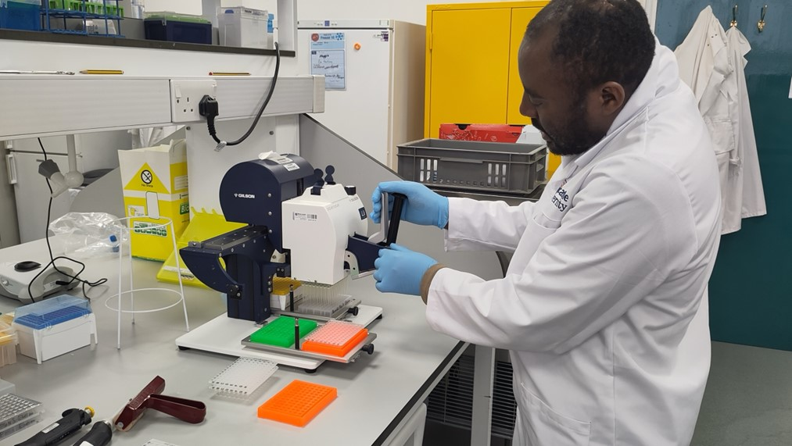
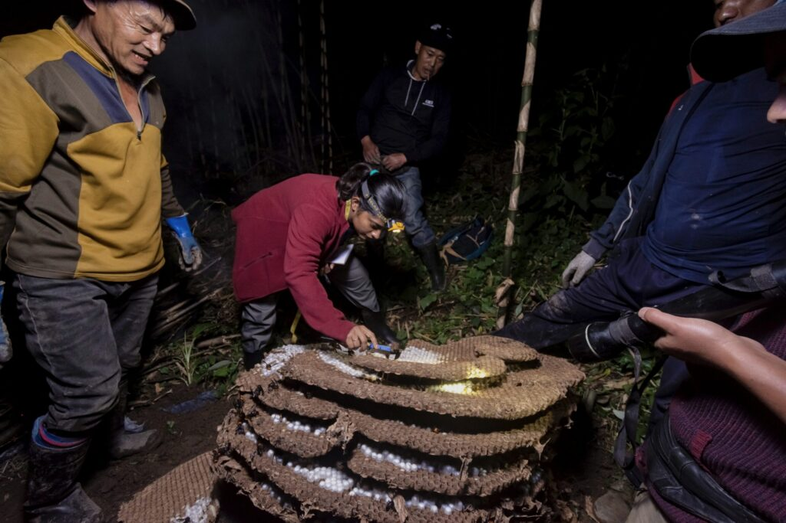

Ecology
Wasps play a huge role in shaping their ecosystems, through pollination, predation, and parasitoidism. Their diversity in species, behaviour and ecological roles is astounding, and their current and potential capacity to benefit humans is unparalleled, and yet they have one of the worst reputations of any insect worldwide. We want to know:
How are wasps shaping plant and invertebrate communities through pollination, predation and parasitism?
How are wasps benefitting humans through the ecosystem services they provide?
How can wasps’ natural behaviours be utilized for human good through pest control and other services?
How can citizen science change minds and create amazing new datasets?
How do we change peoples’ perceptions of wasps and share the #wasplove ?
{kind=link}

Read about how we use Citizen Science to power UK social wasp research here
Human interactions
Human societies have long interacted with insects in ways that shape food systems, beliefs, and our understanding of the ecosystem. Traditional ecological knowledge (TEK) is increasingly recognised as invaluable for understanding human- environment interactions and informing conservation and sustainability science. The knowledge possessed by local communities like organic farmers can inform us about nuanced ways of understanding human- nature interactions. We use mixed-method approaches from anthropology to ecology to understand how different communities interact with insect ecology and conservation.
{kind=link}

Femi’s research focuses on understanding the socio-economic and ecological role of social wasps by combining ethnographic methods with experimental ecology in Nagaland, India and London, UK